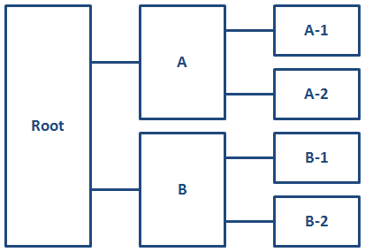

Key-based addressing
Indirect key-based addressing
DITA keys provide an alternative to direct addressing. The key reference mechanism provides a layer of indirection so that resources (for example, URIs, metadata, or variable text strings) can be defined at the DITA map level instead of locally in each topic.
For information about using keys to define and reference controlled values, see Subject scheme maps and their usage.
Core concepts for working with keys
The concepts described below are critical for a full understanding of keys and key processing.
The use of the phases "<map> element" or
"<topicref> element" should be interpreted as
"<map> element and any specialization of
<map> element " or " <topicref> element or
any specialization of <topicref> element."
Definitions related to keys
- resource
- For the purposes of keys and key resolution, one of the following:
- An object addressed by URI
- Metadata specified on a resource, such as a
@scopeor@formatattribute - Text or metadata located within a
<topicmeta>element
- key
- A name for a resource. See Using keys for addressing for more information.
- key definition
- A
<topicref>element that binds one or more key names to zero or more resources. - key reference
- An attribute that references a key, such as
@keyrefor@conkeyref. - key space
- A list of key definitions that are used to resolve key references.
- effective key definition
- The definition for a key within a key space that is used to resolve references to that key. A key might have multiple definitions within a key space, but only one of those definitions is effective.
- key scope
- A map or section of a map that defines its own key space and serves as the resolution context for its key references.
Key definitions
A key definition binds one or more keys to zero or more resources. Resources can be:
- Any URI-addressed resource that is referenced directly by the
@hrefattribute or indirectly by the@keyrefattribute on the key definition. References to the key are considered references to the URI-addressed resource. - (If the key definition contains a child
<topicmeta>element) The child elements of the<topicmeta>element. The content of those elements can be used to populate the content of elements that reference the key.
If a key definition does not contain a <topicmeta> element and does not
refer to a resource by @href or
@keyref, it is nonetheless a valid key definition. References to the key
definition are considered resolvable, but no linking or content transclusion occurs.
Key scopes
All key definitions and key references exist within a key scope. If the @keyscope attribute is never specified within the map hierarchy,
all keys exist within a single, default key scope.
Additional key scopes are created when the
@keyscope attribute is used. The @keyscope
attribute specifies a name or names for the scope. Within a map hierarchy, key scopes are
bounded by the following:
- The root map.
- The root element of submaps when the root elements of the
submaps specify the
@keyscopeattribute - Any
<topicref>elements that specify the@keyscopeattribute
Key spaces
The key space associated with a key scope is used to resolve all key references that occur immediately within that scope. Key references in child scopes are resolved using the key spaces that are associated with those child scopes.
A key scope is associated with exactly one key space. That key space contains all key definitions that are located directly within the scope; it might also contain definitions that exist in other scopes. Specifically, the key space associated with a key scope is comprised of the following key definitions, in order of precedence:
- All key definitions from the key space associated with the parent key scope, if any.
- Key definitions within the scope-defining element, including those defined in directly-addressed, locally-scoped submaps, but excluding those defined in child scopes. (Keys defined in child scopes cannot be addressed without qualifiers.)
- The key definitions from child scopes, with each key prepended by the child scope name followed by a period. If a child scope has multiple names, the keys in that scope are addressable from the parent scope using any of the scope names as a prefix.
Effective key definitions
A key space can contain many definitions for a given key, but only one definition is effective for the purpose of resolving key references.
When a key has a definition in the key space that is inherited from a parent scope, that definition is effective. Otherwise, a key definition is effective if it is first in a breadth-first traversal of the locally-scoped submaps beneath the scope-defining element. Put another way, a key definition is effective if it is the first definition for that key name in the shallowest map that contains that key definition. This allows higher-level map authors to override keys defined in referenced submaps.
@keys
attribute might be the effective definition for some of its
keys but not for others.Within a key scope, keys do not have to be defined before they are referenced. The key space is effective for the entire scope, so the order of key definitions and key references relative to one another is not significant. This has the following implications for processors:
- All key spaces for a root map must be determined before any key reference processing can be performed.
- Maps referenced solely by key reference have no bearing on key space contents.
For purposes of key definition precedence, the scope-qualified key definitions from a child scope are considered to occur at the location of the scope-defining element within the parent scope. See Example: How key scopes affect key precedence for more information.
Setting key names with the @keys attribute
A @keys attribute consists of one or more space-separated keys. Map
authors define keys using a <topicref> or <topicref>
specialization that contains the @keys attribute. Each key definition introduces
an identifier for a resource referenced from a map. Keys resolve to the resources given as the
@href value on the key definition <topicref> element, to
content contained within the key definition <topicref> element, or
both.
@keys attribute uses the
following syntax:- The value of the
@keysattribute is one or more space-separated key names. - Key names consist of characters that are legal in a URI. The case of key names is significant.
- The following characters are prohibited in key names: "{", "}", "[", "]", "/", "#", "?", and whitespace characters.
A key cannot resolve to sub-topic elements, although a
@keyref attribute can do so by combining a key
with a sub-topic element id.
The @keyref attribute
The @keyref attribute provides an indirect, late-bound reference to
topics, to collections of topics (ditabase), to maps, to referenceable portions of maps, to
non-DITA documents, to external URIs, or to XML content contained within a key definition topic
reference. When the DITA content is processed, the key references are resolved using key
definitions from DITA maps.
For elements that only refer to topics or non-DITA resources, the value of the
@keyref attribute is a key name. For elements that can refer to elements within maps or topics, the value of the @keyref
attribute is a key name, a slash ("/"), and the ID of the target element, where the key
name must be bound to either the map or topic that contains the target element.
Using keys for addressing
For topic references, image references, and other link relationships, resources can
be indirectly addressed by using the @keyref attribute. For content
reference relationships, resources can be indirectly addressed by using the
@conkeyref attribute.
Syntax
For references to topics, maps, and non-DITA resources, the value of the
@keyref attribute is simply a key name (for example,
keyref="topic-key").
For references to non-topic elements within topics,
the value of the @keyref attribute is a key name, a slash ("/"), and the ID of the target element (for
example, keyref="topic-key/some-element-id".)
Example
This section is non-normative.
<topic id="topicid">
<title>Example referenced topic</title>
<body>
<section id="section-01">Some content.</section>
</body>
</topic><map>
<topicref keys="myexample"
href="file.dita"
/>
</map>A cross reference of the form keyref="myexample/section-01" resolves
to the <section> element in the topic. The key reference is
equivalent to the URI reference
xref="file.dita#topicid/section-01".
Key scopes
Key scopes enable map authors to specify different sets of key definitions for different map branches.
A key scope is defined by a <map> or <topicref>
element that specifies the @keyscope attribute. The @keyscope
attribute specifies the names of the scope, separated by spaces. The
legal characters for a key scope name are the same as those for keys.
A key scope includes the following components:
- The scope-defining element
- The elements that are contained by the scope-defining element, minus the elements that are contained by child key scopes
- The elements that are referenced by the scope-defining element or its descendants, minus the elements that are contained by child key scopes
If the @keyscope attribute is specified on both a
reference to a DITA map and the root element of the referenced map, only one scope is created;
the submap does not create another level of scope hierarchy. The single key scope that results
from this scenario has multiple names; its names are the union of the values of the
@keyscope attribute on the map reference and the root element of the submap.
This means that processors can resolve references to both the key scopes specified on the map
reference and the key scopes specified on the root element of the submap.
The root element of a root map always defines a key scope, regardless of whether a
@keyscope attribute is present. All key definitions and key references exist
within a key scope, even if it is an unnamed, implicit key scope that is defined by the root
element in the root map.
Each key scope has its own key space that is used to resolve the key references that occur within the scope. The key space that is associated with a key scope includes all of the key definitions within the key scope. This means that different key scopes can have different effective key definitions:
- A given key can be defined in one scope, but not another.
- A given key also can be defined differently in different key scopes.
Key references in each key scope are resolved using the effective key definition that is specified within its own key scope.
Example: Key scopes specified on both the map reference and the root element of the submap
This section is non-normative.
Consider the following scenario:
<map>
<mapref keyscope="A" href="installation.ditamap"/>
<!-- ... -->
</map><map keyscope="B">
<!-- ... -->
</map>Only one key scope is created; it has key scope names of "A" and "B".
The @keyscope attribute
The @keyscope attribute consists of one or more space-separated key
scope names. Map authors define the boundaries for key scopes by specifying the
@keyscope attribute on <map> elements,
<topicref> elements, or elements that are specializations of
<map> or <topicref>. Such elements, their
contents, and any locally-scoped content referenced from within the element, are considered to
be part of the scope. Keys defined within a scope are only directly referenceable from within
the same scope. They can be referenced from the parent scope using the scope's name, followed by
a period, followed by the key name.
All key scopes are contiguous and non-intersecting. Within a root map, two distinct key scopes with the same name have no relationship with each other aside from that implied by their relative locations in the key scope hierarchy. They do not, for example, share key definitions. The only processing impact of a key scope's names is in defining the prefixes used when contributing qualified key names to the parent scope. For example, consider the following map segment:
<map>
<topicgroup keyscope="xyz" id="scope1">
<keydef keys="a" id="def1"/>
<!-- other topic references -->
</topicgroup>
<topicgroup keyscope="xyz" id="scope2">
<keydef keys="a" id="def2"/>
<!-- other topic references -->
</topicgroup>
<!-- lots of other content -->
</map>This map creates two distinct scopes that happen to use the same name (xyz). This results in the following:
- Each
<topicgroup>sets a scope of xyz and includes a key a. From outside of those two scopes, references tokeyref="xyz.a"(key a within the scope xyz) will always resolve to the first instance of that value, which is in the first<topicgroup>. - Within the first
<topicgroup>, content useskeyref="a"will resolve to the key in that branch (defined on the element withid="def1"). - Within the second
<topicgroup>, content useskeyref="a"will resolve to the key in that branch (defined on the element withid="def2").
Addressing keys across scopes
When referencing key definitions that are defined in a different key scope, key names might need to be qualified with key scope names.
A root map might contain any number of key scopes; relationships between key scopes are discussed using the following terms:
- child scope
- A key scope that occurs directly within another key scope. For example, in the figure below, key scopes "A-1" and "A-2" are child scopes of key scope "A".
- parent scope
- A key scope that occurs one level above another key scope. For example, in the figure below, key scope "A" is a parent scope of key scopes "A-1" and "A-2".
- ancestor scope
- A key scope that occurs any level above another key scope. For example, in the figure below, key scopes "A" and "Root" are both ancestor scopes of key scopes "A-1" and "A-2"
- descendant scope
- A key scope that occurs any level below another key scope. For example, in the figure below, key scopes "A", "A-1", and "A-2" are all descendant scopes of the implicit, root key scope
- sibling scope
- A key scope that shares a common parent with another key scope. For example, in the figure below, key scopes "A" and "B" are sibling scopes; they both are children of the implicit, root key scope.
- key scope hierarchy
- A key scope and all of its descendant scopes.

Keys that are defined in parent key scopes
The key space that is associated with a key scope also includes all key definitions from its parent key scope. If a key name is defined in both a key scope and its parent scope, the key definition in the parent scope takes precedence. This means that a key definition in a parent scope overrides all definitions for the same key name in all descendant scopes. This enables map authors to override the keys that are defined in submaps, regardless of whether the submaps define key scopes.
In certain complex cases, a scope-qualified key name (such as scope.key) can override an unqualified key name from the parent scope. See Example: How key scopes affect key precedence.
Keys that are defined in child key scopes
The key space associated with a key scope does not include the unqualified key definitions from the child scopes. However, it does include scope-qualified keys from the child scopes. This enables sibling key scopes to have different key definitions for the same key name.
A
scope-qualified key name is a key name, prepended by one
or more key scope names
and separated by periods. For example, to reference a key
"keyName" defined in a child scope named "keyScope", specify
keyref="keyScope.keyName".
If a key scope has multiple names, its keys can be addressed from its
parent scope using any of the scope names. For example, if a key scope is
defined with
keyscope="a b c", and it contains a key name of
"product", that key can be referenced from the parent scope by
keyref="a.product",
keyref="b.product", or
keyref="c.product"
Because a child scope contributes its scope-qualified keys to its
parent scope, and that parent scope contributes
its scope-qualified keys to
its parent scope, it is possible to address the keys in any
descendant scope by using the scope-qualified key name. For example, consider a
key scope named "ancestorScope" that has a child scope named "parentScope"
which in turn has a child scope named "childScope". The scope "childScope"
defines a key named "keyName". To reference the key "keyName" from scope
"ancestorScope", specify the scope-qualified key name:
keyref="parentScope.childScope.keyName".
Keys that are defined in sibling key scopes
Because a parent key scope contains scope-qualified keys from all of its child scopes, and a child scope inherits all of the key definitions (including scope-qualified keys) from its parent scope, it is possible for a child scope to reference its own scope-qualified keys, as well as those defined by its sibling scopes.
For example, consider two sibling scopes, "scope1" and "scope2". Each scope defines the key "productName". References to "productName" in each scope resolve to the local definition. However, since each scope inherits the scope-qualified keys that are available in their parent scope, either scope can reference "scope1.productName" and "scope2.productName" to refer to the scope-specific definitions for that key.
Cross-deliverable addressing and linking
A map can use scoped keys to reference keys that are defined in a different root map. This cross-deliverable addressing can support the production of deliverables that contain working links to other deliverables.
When maps are referenced and the value of the
@scope attribute is set to "peer", the implications are that the two
maps are managed in tandem, and that the author of the referencing map might have access
to the referenced map. Adding a key scope to the reference indicates that the peer map
should be treated as a separate deliverable for the purposes of linking.
The keys that are defined by the peer map belong to any key scopes
that are declared on the <topicref> element that
references that map. Such keys can be referenced from content in the referencing map by
using scope-qualified key names. However, processors handle references to keys that are
defined in peer maps differently from how they handle references to keys that are
defined in submaps.
DITA processors are not required to resolve key references to peer maps. However, if all resources are available in the same processing or management context, processors have the potential to resolve key references to peer maps. There might be performance, scale, and user interface challenges in implementing such systems, but the ability to resolve any given reference is ensured when the source files are physically accessible.
Note the inverse implication; if the peer map is not available, then it is impossible to resolve the key reference. Processors that resolve key references to peer maps should provide appropriate messages when a reference to a peer map cannot be resolved. Depending on how DITA resources are authored, managed, and processed, references to peer maps might not be resolvable at certain points in the content life cycle.
The peer map might specify @keyscope on its root element. In that case, the
@keyscope on the peer map is ignored for the purpose of resolving
scoped key references from the referencing map. This avoids the need for processors to
have access to the peer map in order to determine whether a given key definition comes
from the peer map.
Example: A root map that declares a peer map
This section is non-normative.
Consider the DITA maps map-a.ditamap and map-b.ditamap. Map A designates Map B as a peer map by using the following markup:
<map>
<title>Map A</title>
<topicref
scope="peer"
format="ditamap"
keyscope="map-b"
href="../map-b/map-b.ditamap"
processing-role="resource-only"
/>
<!-- ... -->
</map>In this example, map-b.ditamap is not a submap of Map A; it is a peer map.
Example: Key resolution in a peer map that contains a @keyscope
attribute on the root element
This section is non-normative.
Consider the map reference in map Map A:
<mapref
keyscope="scope-b"
scope="peer"
href="map-b.ditamap"
/> where map-b.ditamap contains the following markup:
<map keyscope="product-x">
<!-- ... -->
</map>From the context of Map A, key references of the form
scope-b.somekey are resolved to keys that are defined in the
global scope of map B, but key references of the form
product-x.somekey are not. The presence of a
@keyscope attribute on the <map> element
in Map B has no effect. A key reference to the scope
scope-b.somekey is equivalent to the unscoped reference
somekey when processed in the context of Map B as the root
map. In both cases, the presence of @keyscope on the root element of
Map B has no effect; in the first case it is explicitly ignored, and in the second
case the key reference is within the scope product-x and so does
not need to be scope qualified.
Processing key references
Key references can resolve as links, as text, or as both. Within a map, they also can be used to create or supplement information on a topic reference. This topic covers information that is common to all key processing, regardless of how the key is used.
Processing of undefined keys
If both @keyref and @href attributes are specified on
an element, the @href value MUST
be used as a fallback address when the key name is undefined. If both
@conkeyref and @conref attributes are specified
on an element, the @conref value MUST be used as a fallback address when the key name is undefined.
Determining effective attributes on the key-referencing element
The attributes that are common to the key-defining element and the key-referencing
element, other than the @keys,
@processing-role, and @id attributes, are combined as for
content references, including the special processing for the @xml:lang,
@dir, and @translate attributes.
Keys and conditional processing
The effective key definitions for a key space might be affected by conditional processing (filtering). Processors SHOULD perform conditional processing before determining the effective key definitions. However, processors might determine effective key definitions before filtering. Consequently, different processors might produce different effective bindings for the same map when there are key definitions that might be filtered out based on their filtering attributes.
Reusing a topic in multiple key scopes
If a topic that contains key references is reused in multiple key scopes within a given root map such that its references resolve differently in each use context, processors MUST produce multiple copies of the source topic in resolved output for each distinct set of effective key definitions that are referenced by the topic.
In such cases, authors can use <resourceid> within topic
references to specify distinct anchor components for each instance of the topic.
with the @appid-role attribute set to
deliverable-anchor to specify different source URIs for each
reference to a topic.
Error conditions
If a referencing element contains a key reference with
an undefined key, it is processed as if there were no key reference, and the value
of the @href attribute is used as the reference. If the
@href attribute is not specified, the element is not treated as
a navigation link. If it is an error for the element to be empty, an implementation
MAY give an error message; it also MAY recover from this error condition by leaving
the key reference element empty.
Processing key references for navigation links and images
Keys can be used to create or redirect links and cross references. Keys also can be used to address resources such as images or videos. This topic explains how to evaluate key references on links and cross references to determine a link target.
When a key definition is bound to a resource that is addressed by the
@href or @keyref attributes, and does not specify
"none" for the @linking attribute, all references to that key definition
become links to the bound resource. When a key definition is not bound to a resource or
specifies "none" for the @linking attribute, references to that key
definition do not become links.
When a key definition has no @href value and no @keyref
value, references to that key will not result in a link, even if they do contain an
@href attribute of their own. If the key definition also does not
contain a <topicmeta> subelement, empty elements that refer to
the key (such as <link keyref="a"/> or <xref keyref="a"
href="fallback.dita"/>) are ignored.
The <object> element has an additional key-referencing attribute
named @datakeyref. Key names in this attribute are resolved using the
same processing that is described for the normal @keyref attribute.
Processing key references on <topicref> elements
While <topicref> elements are used to define keys, they also
can reference keys that are defined elsewhere. This topic explains how to evaluate key
references on <topicref> elements and its
specializations.
- Determining the effective resource
-
For topic references that use the
@keyrefattribute, the effective resource bound to the<topicref>element is determined by resolving all intermediate key references. Each key reference is resolved either to a resource addressed directly by URI reference in an@hrefattribute, or to no resource. Processors MAY impose reasonable limits on the number of intermediate key references that they will resolve. Processors SHOULD support at least three levels of key references.Note (non-normative):This rule applies to all topic references, including those that define keys. The effective bound resource for a key definition that uses the@keyrefattribute cannot be determined until the key space has been constructed. - Combining metadata
-
Content from a key-defining element cascades to the key-referencing element following the rules for combining metadata between maps and other maps and between maps and topics.
The combined attributes and content cascade from one map to another or from a map to a topic, but this is controlled by existing rules for cascading, which are not affected by the use of key references.
If, in addition to the @keys attribute, a key definition specifies a
@keyref attribute that can be resolved after the key resolution
context for the key definition has been determined, the resources bound to the
referenced key definition take precedence.
Processing key references to generate text or link text
Variable text can be specified by key definitions. Processors determine the effective text by retrieving the content of elements in a specific sequence.
- Empty elements
-
Empty elements that specify a key reference might get their effective content from the referenced key definitions. For the purpose of determining variable text, empty elements are defined as elements that meet the following criteria:
- Have no text content, including white space
- Have no sub-elements
- Have no attributes that would be used as text content
- Key definitions with child
<topicmeta>elements -
When an empty element references a key definition that has a child
<topicmeta>element, content from that<topicmeta>element is used to determine the effective content of the referencing element. Effective content from the key definition becomes the element content, with the following exceptions:- For empty
<image>elements, the effective content is used as alternate text. This is equivalent to creating an<alt>sub-element to hold that content. - For empty
<link>elements, the effective content is used as link text. This is equivalent to creating a<linktext>sub-element to hold that content. - For empty
<link>and<xref>elements, a key definition can provide a short description in addition to the normal effective content. If the key definition includes<shortdesc>inside of<topicmeta>, the content of the<shortdesc>element also provides effective content for a<desc>sub-element. - The
<longdescref>element is an empty element with no effective content. Key definitions do not set effective text for this element. - The
<param>element does not have any effective content, so key definitions do not result in effective content for<param>elements.
- For empty
- Processing rules
-
Processors MUST resolve variable text that is defined using keys by using the following sequence:
- Effective text content is taken from the
<keytext>element. - Effective text content is taken from the
<titlealt>element with@title-roleset to linking. - Effective text content is taken from the
<titlealt>element with@title-roleset to navigation. - Effective text content is taken from the
<titlealt>element with@title-roleset to a processor-recognized value. - Effective text content is taken from the title of the referenced document, if available.
- Effective text content is determined by the processor.
- Effective text content is taken from the
- Generalization of effective content
-
When the effective content for a key reference element results in invalid elements, those elements SHOULD be generalized to produce a valid result.
For example,
<keytext>in the key definition might use a domain specialization of<keyword>that is not valid in the key reference context, in which case the specialized element is generalized to<keyword>. If the generalized content is also not valid, a text equivalent is used instead. For example,<keytext>might include<ph>or a specialized<ph>in the key definition, but neither of those are valid as the effective content for a<keyword>. In that case, the text content of the<ph>is used.
Examples of keys
This section is non-normative.
This section of the specification contains examples and scenarios. They illustrate a wide variety of ways that keys can be used.
Examples: Key definition
This section is non-normative.
The <topicref> element, and any specialization of
<topicref> that allows the @keys attribute, can be used
to define keys.
In the following example, a <topicref> element is used to define a key;
the <topicref> element also contributes to the navigation structure.
<map>
<!--... -->
<topicref keys="apple-definition" href="apple-gloss-en-US.dita" />
<!--... -->
</map>The presence of the @keys attribute does not affect how the
<topicref> element is processed.
In the following example, a <keydef> element is used to define a
key.
<map>
<!--... -->
<keydef keys="apple-definition" href="apple-gloss-en-US.dita"/>
<!--... -->
</map>Because the <keydef> element sets the default value of the
@processing-role attribute to "resource-only", the key definition does not
contribute to the map navigation structure; it only serves as a key definition for the key name "apple-definition".
Examples: Key definitions for variable text
This section is non-normative.
Key definitions can be used to store variable text, such as product names and user-interface labels. Depending on the key definition, the rendered output might have a link to a related resource.
In the following example, a "product-name" key is defined. The key definition contains a child
<keyword> element nested within a
<keydef>element.
<map>
<keydef keys="product-name">
<topicmeta>
<keywords>
<keyword>Thing-O-Matic</keyword>
</keywords>
</topicmeta>
</keydef>
</map><topic id="topicid">
<title>...</title>
<body>
<p><keyword keyref="product-name"/> is a product designed to ...</p>
</body>
</topic>When processed, the output contains the text "Thing-O-Matic is a product designed to ".
In the following example, the key definition contains both a reference to a resource and variable text.
<map>
<keydef keys="product-name" href="thing-o-matic.dita">
<topicmeta>
<keywords>
<keyword>Thing-O-Matic</keyword>
</keywords>
</topicmeta>
</keydef>
</map>When processed using the key reference from the first example, the output contains the "Thing-O-Matic is a product designed to " text. The phrase "Thing-O-Matic" also is a link to the thing-o-matic.dita topic.
Example: Duplicate key definitions within a single map
This section is non-normative.
In this scenario, a DITA map contains duplicate key definitions. How a processor finds the effective key definition depends on document order and the effect of filtering applied to the key definitions.
In the following example, a map contains two definitions for the key "load-toner":
<map>
<!--... -->
<keydef keys="load-toner" href="model-1235-load-toner-proc.dita"/>
<keydef keys="load-toner" href="model-4545-load-toner-proc.dita"
/>
<!--... -->
</map>In this example, only the first key definition (in document order) of the "load-toner" key is effective. All references to the key within the scope of the map resolve to the topic model-1235-load-toner-proc.dita.
In the following example, a map contains two definitions for the "file-chooser-dialog" key;
each key definition specifies a different value for the @platform attribute.
<map>
<!--... -->
<keydef keys="file-chooser-dialog" href="file-chooser-osx.dita" platform="osx"/>
<keydef keys="file-chooser-dialog" href="file-chooser-win7.dita" platform="windows7"/>
<!--... -->
</map>In this case, the effective key definition is determined not only by the order in which the
definitions occur, but also by whether the active value of the platform condition is
osx or windows7. Both key definitions are
potentially effective because they have distinct values for the conditional
attribute. Note that if no active value is specified for the @platform
attribute at processing time, then both of the key definitions are present and so the first
one in document order is the effective definition.
@platform attribute are excluded,
then neither definition is effective and the key is undefined. That case can be avoided by
specifying an unconditional key definition after any conditional key definitions, for
example:<map>
<!--... -->
<keydef keys="file-chooser-dialog" href="file-chooser-osx.dita" platform="osx"/>
<keydef keys="file-chooser-dialog" href="file-chooser-win7.dita" platform="windows7"/>
<keydef keys="file-chooser-dialog" href="file-chooser-generic.dita"/>
<!--... -->
</map>If the above map is processed with both osx and windows7
values for the @platform attribute excluded, then the effective key definition
for "file-chooser-dialog" is the file-chooser-generic.dita resource.
Example: Duplicate key definitions across multiple maps
This section is non-normative.
In this scenario, the root map contains references to two submaps, each of which defines the same key. The effective key definition depends upon the document order of the direct URI references to the maps.
In the following example, a root map contains a key definition for the key "toner-specs" and references to two submaps.
<map>
<keydef keys="toner-specs" href="toner-type-a-specs.dita"/>
<mapref href="submap-01.ditamap"/>
<mapref href="submap-02.ditamap"/>
</map>
The first submap, submap-01.ditamap, contains definitions for the keys "toner-specs" and "toner-handling":
<map>
<keydef keys="toner-specs" href="toner-type-b-specs.dita"/>
<keydef keys="toner-handling" href="toner-type-b-handling.dita"/>
</map>The second submap, submap-02.ditamap, contains definitions for the keys "toner-specs", "toner-handling", and "toner-disposal":
<map>
<keydef keys="toner-specs" href="toner-type-c-specs.dita"/>
<keydef keys="toner-handling" href="toner-type-c-handling.dita"/>
<keydef keys="toner-disposal" href="toner-type-c-disposal.dita"/>
</map>For this example, the effective key definitions are listed in the following table.
| Key | Bound resource |
|---|---|
| toner-specs | toner-type-a-specs.dita |
| toner-handling | toner-type-b-handling.dita |
| toner-disposal | toner-type-c-disposal.dita |
The key definition for "toner-specs" in the root map is effective, because it is the first encountered in a breadth-first traversal of the root map. The key definition for "toner-handling" in submap-01.ditamap is effective, because submap-01 is included before submap-02 and so comes first in a breadth-first traversal of the submaps. The key definition for "toner-disposal" is effective because it is the only definition of the key.
Example: Key definition with key reference
This section is non-normative.
When a key definition also specifies a key reference, the key reference also must be resolved in order to determine the effective resources that are bound to that key definition.
In the following example, a <topicref> element references the key
"widget". The definition for "widget" in turn references the key "mainProduct".
<map>
<topicref keyref="widget" id="example"/>
<keydef keys="widget" href="widgetInfo.dita" scope="local" format="dita" rev="v1r2"
keyref="mainProduct">
<topicmeta><navtitle>Information about Widget</navtitle></topicmeta>
</keydef>
<keydef keys="mainProduct" href="http://example.com/productPage" scope="external" format="html"
product="prodCode" audience="sysadmin">
<topicmeta><navtitle>Generic product page</navtitle></topicmeta>
</keydef>
</map>
For this example, the key reference to "widget" pulls resources from that key definition, which in turn pulls resources from "mainProduct".
The resources from the key definitions are combined as follows:
- The metadata resources from "mainProduct" are combined with the resources already
specified on the "widget" key definition, resulting in the addition of
@productand@audiencevalues. - The navigation title on the "widget" key definition overrides those on the "mainProduct" key definition.
- The
@href,@scope, and@formatattributes on the "mainProduct" key definition override those on "widget".
Thus after key references are resolved, the original <topicref>
element is equivalent to the following:
<topicref id="example"
href="http://example.com/productPage" scope="external" format="html"
rev="v1r2"
product="prodCode" audience="sysadmin">
<topicmeta><navtitle>Information about Widget</navtitle></topicmeta>
</topicref>Example: Link redirection
This section is non-normative.
This scenario outlines how different authors can redirect links to a common topic by
using key definitions. This could apply to
<xref>, <link>, or any elements (such as
<keyword> or <term>) that become navigation
links.
A company wants to use a common DITA topic for information about recycling: recycling.dita. However, the topic contains a cross-reference to a topic that needs to be unique for each product line; each such topic contains product-specific URLs.
-
The editing team creates a recycling.dita topic that includes a cross-reference to the product-specific topic. The cross reference is implemented using a key reference:
<xref keyref="product-recycling-info" href="generic-recycling-info.dita"/>The value of the
@hrefattribute provides a fallback in the event that a product team forgets to include a key definition for "product-recycling-info". -
Each product documentation group creates a unique key definition for "product-recycling-info". Each group authors the key definition in a DITA map, for example:
<map> <!-- ... --> <keydef keys="product-recycling-info" href="acme-server-recycling.dita"/> <!-- ... --> </map>Each team can use the recycling.dita topic, and the cross reference in the topic resolves differently for each team.
-
A year later, there is an acquisition. The newly-acquired team wants to reuse Acme's common material, but it needs to direct its users to an external Web site that lists the URLs, rather than a topic in the product documentation. Their key definition looks like the following:
<topicref keys="product-recycling-info" href="http://acme.example.com/server/recycling" scope="external" format="html"/>When newly-acquired team uses the recycling.dita topic, it resolves to the external Web site; however for all other teams, the cross reference in the topic continues to resolves to their product-specific topic.
-
A new product team is formed, and the team forgets to include a key definition for "product-recycling-info" in one of their root maps. Because the cross reference in the recycling.dita topic contains a value for the
@hrefattribute, the link falls back to generic-recycling-info.dita, thus avoiding a broken cross reference in the output.
Example: Link modification or removal
This section is non-normative.
This scenario outlines how different authors can effectively remove or modify a
<link> element in a shared topic.
A company wants to use a shared topic for information about customer support. For most products, the shared topic includes a link to a topic about extended warranties. But a small number of products do not offer extended warranties.
-
Team one creates the shared topic: customer-support.dita. The topic contains the following mark-up:
<related-links> <link keyref="extended-warranties" href="common/extended-warranties.dita"/> </related-links> -
The teams that need the link to the topic about extended warranties can reference the customer-support.dita topic in their DITA maps. When processed, the related link in the topic resolves to the common/extended-warranties.dita topic.
-
The teams that do not want the related link to the topic about extended warranties can include a key definition in their DITA map that does not include an
@hrefattribute, for example:<map> <!-- ... --> <keydef keys="extended-warranties"/> <!-- ... --> </map>When processed, the related link in the topic is not rendered.
-
Yet another team wants to simply have a paragraph about extended warranties printed. They define the key definition for "extended-warranties" as follows:
<map> <!-- ... --> <keydef keys="extended-warranties"> <topicmeta> <keytext>This product does not offer extended warranties.</keytext> </topicmeta> </keydef> <!-- ... --> </map>When this team renders their content, there is no hyperlink in the output, just the text "This product does not offer extended warranties" statement.
Example: Links from <term> or <keyword>
elements
This section is non-normative.
The @keyref attribute enables authors to specify that references to
keywords or terms in a DITA topic can be rendered as a link to an associated resource.
In this scenario, a company with well-developed glossary wants to ensure that instances of a term that is defined in the glossary always include a link to the glossary topic.
-
An information architect adds values for the
@keysattribute to all the of the<topicref>elements that are in the DITA map for the glossary, for example:<map> <title>Company-wide glossary</title> <topicref keys="term-1" href="term-1.dita"/> <topicref keys="term-2" href="term-2.dita"/> <topicref keys="term-3" href="term-3.dita"/> <topicref keys="term-4" href="term-4.dita"/> </map> -
When authors refer to a term in a topic, they use the following mark-up:
<term keyref="term-1"/>When the
<term>element is rendered, the content is provided by the<title>element of the glossary topic. The<term>element also is rendered as a link to the glossary topic.
Example: conref redirection
This section is non-normative.
The @conkeyref attribute enables authors to share DITA topics that reuse
content. It also enables map authors to specify different key
definitions for common keys.
In this scenario, Acme produces content for a product that is also resold through a business partner. When the DITA content is published for the partner, several items must be different, including the following:
- Product names
- Standard notes that contain admonitions
Simply using the @conref attribute would not be possible for teams that use a
component content management system where every DITA topic is addressed by a globally-unique
identifier (GUID).
-
Authors reference the reusable content in their topics by using the
@conkeyrefattribute, for example:<task id="reusable-product-content"> <title><keyword conkeyref="reuse/product-name"/> prerequisites</title> <taskbody> <prereq><note conkeyref="reuse/warning-1"/></prereq> <!-- ... --> </taskbody> </task> -
Authors create two different topics; one topic contains elements appropriate for Acme, and the other topic contains elements appropriate for the partner. Note that each reuse topic must use the same element types (or compatible specializations) and values for the
@idattribute. For example, the following reuse file is appropriate for use by Acme:<topic id="acme-reuse"> <title>Reuse topic for Acme</title> <body> <note id="warning-1">Admonitions for Acme</note> <p><keyword id="product-name">Acme product name</keyword></p> <!-- ... --> </body> </topic>The following reuse file is appropriate for use by the OEM partner:
<topic id="oem-reuse"> <title>Reuse topic for OEM partner</title> <body> <note id="warning-1">Admonitions for partner</note> <p><keyword id="product-name">OEM product name</keyword></p> <!-- ... --> </body> </topic> -
The two versions of the DITA maps each contain different key definitions for the key name "reuse". (This associates a key with the topic that contains the appropriate reusable elements.) For example:
Figure 4. DITA map for Acme <map> <!-- ... --> <keydef keys="reuse" href="acme-reuse.dita"/> <!-- ... --> </map>Figure 5. DITA map for OEM partner <map> <!-- ... --> <keydef keys="reuse" href="oem-reuse.dita"/> <!-- ... --> </map>
When each of the DITA maps is published, the elements that are referenced by
@conkeyref will use the reuse topic that is referenced by the
<keydef> element in the map. The product names and warnings will be
different in the output.
Example: Keys and collaboration
This section is non-normative.
Keys enable authors to collaborate and work with evolving content with a minimum of time spent reworking topic references.
In this scenario, authors collaborate on a publication that includes content for a product that is in the early stages of development. The company documentation is highly-structured and uses the same organization for all publications: "Introduction," "Example," and "Reference."
-
Author one creates a submap for the new product information. She knows the structure that the final content will have, but she does not want to create empty topics for information that is not yet available. She decides to initially author what content is available in a single topic. When more content is available, she'll create additional topics. Her DITA map looks like the following:
<map> <title>New product content</title> <topicref keys="1-overview 1-intro 1-example 1-reference" href="1-overview.dita"/> </map> -
Author two knows that he needs to add a
<topicref>to the "Example" topic that will eventually be authored by author one. He references the not-yet-authored topic by key reference:<topicref keyref="1-example"/>His topic reference initially resolves to the 1-overview.dita topic.
-
Author one finally gets the information that she was waiting on. She creates additional topics and modifies her DITA map as follows:
<map> <title>New product content</title> <topicref keys="1-overview" href="1-overview.dita"> <topicref keys="1-intro" href="1-intro.dita"/> <topicref keys="1-example" href="1-example.dita"/> <topicref keys="1-reference" href="1-reference.dita"/> </topicref> </map>Without needing to make any changes to the content, author two's topic reference now resolves to the 1-example.dita topic.
Examples of scoped keys
This section is non-normative.
This section of the specification contains examples and scenarios. They illustrate how scoped keys can be used.
Example: Scoped key definitions for variable text
This section is non-normative.
Scoped key definitions can be used for variable text. This enables you to use the same DITA topic multiple times in a DITA map, and in each instance the variable text can resolve differently.
The Acme Tractor Company produces two models of tractor: X and Y. Their product manual contains sets of instructions for each model; until now, the maintenance procedures have been different for each model. Now, the product manual needs to add instructions for changing the oil, and the procedure is identical for both model X and model Y. While most maintenance procedures are different for each model, the instructions for changing the oil are identical for both model X and model Y. The company policies call for including the specific model number in each topic, so a generic topic that could be used for both models is not permitted. Scoped keys can solve this problem.
-
The authoring team creates the new changing-the-oil.dita. The new topic uses the following markup to reference the product model:
<keyword keyref="model"/> -
The information architect examines the root map for the manual, and decides how to define key scopes. Originally, the map looked like the following:
<map> <!-- Model X: Maintenance procedures --> <topicref href="model-x-procedures.dita"> <topicref href="model-x/replacing-a-tire.dita"/> <topicref href="model-x/adding-fluid.dita"/> </topicref> <!-- Model Y: Maintenance procedures --> <topicref href="model-y-procedures.dita"> <topicref href="model-y/replacing-a-tire.dita"/> <topicref href="model-y/adding-fluid.dita"/> </topicref> </map> -
The information architect wraps each set of procedures in a
<topicgroup>element and sets the@keyscopeattribute.<map> <!-- Model X: Maintenance procedures --> <topicgroup keyscope="model-x"> <topicref href="model-x-procedures.dita"> <topicref href="model-x/replacing-a-tire.dita"/> <topicref href="model-x/adding-fluid.dita"/> </topicref> </topicgroup> <!-- Model Y: Maintenance procedures --> <topicgroup keyscope="model-y"> <topicref href="model-y-procedures.dita"> <topicref href="model-y/replacing-a-tire.dita"/> <topicref href="model-y/adding-fluid.dita"/> </topicref> </topicgroup> </map>This defines the key scopes for each set of procedures.
-
The information architect then adds key definitions to each set of procedures, as well as a reference to the changing-the-oil.dita topic.
<map> <!-- Model X: Maintenance procedures --> <topicgroup keyscope="model-x"> <keydef keys="model"> <topicmeta> <keytext>X</keytext> </topicmeta> </keydef> <topicref href="model-x-procedures.dita"> <topicref href="model-x/replacing-a-tire.dita"/> <topicref href="model-x/adding-fluid.dita"/> <topicref href="common/changing-the-oil.dita"/> </topicref> </topicgroup> <!-- Model Y: Maintenance procedures --> <topicgroup keyscope="model-y"> <keydef keys="model"> <topicmeta> <keytext>Y</keytext> </topicmeta> </keydef> <topicref href="model-y-procedures.dita"> <topicref href="model-y/replacing-a-tire.dita"/> <topicref href="model-y/adding-fluid.dita"/> <topicref href="common/changing-the-oil.dita"/> </topicref> </topicgroup> </map>When the DITA map is processed, the changing-the-oil.dita topic is rendered twice. The model variable is rendered differently in each instance, using the text as specified in the scoped key definition. Without key scopes, the first key definition would win, and "model "X" would be used in all topics.
Example: References to scoped keys
This section is non-normative.
You can address scoped keys from outside the key scope in which the keys are defined.
<map xml:lang="en">
<title>Examples of scoped key references</title>
<!-- Key scope #1 -->
<topicgroup keyscope="scope-1">
<keydef keys="key-1" href="topic-1.dita"/>
<topicref keyref="key-1"/>
<topicref keyref="scope-1.key-1"/>
<topicref keyref="scope-2.key-1"/>
</topicgroup>
<!-- Key scope #2 -->
<topicgroup keyscope="scope-2">
<keydef keys="key-1" href="topic-2.dita"/>
<topicref keyref="key-1"/>
<topicref keyref="scope-1.key-1"/>
<topicref keyref="scope-2.key-1" />
</topicgroup>
<topicref keyref="key-1" />
<topicref keyref="scope-1.key-1" />
<topicref keyref="scope-2.key-1" />
</map>For this example, the effective key definitions are listed in the following tables.
| Key reference | Resource |
|---|---|
| key-1 | topic-1.dita |
| scope-1.key-1 | topic-1.dita |
| scope-2.key-1 | topic-2.dita |
| Key reference | Resource |
|---|---|
| key-1 | topic-2.dita |
| scope-1.key-1 | topic-1.dita |
| scope-2.key-1 | topic-2.dita |
| Key reference | Resource |
|---|---|
| key-1 | Undefined |
| scope-1.key-1 | topic-1.dita |
| scope-2.key-1 | topic-2.dita |
Example: Key definitions in nested key scopes
This section is non-normative.
In this scenario, the root map contains nested key scopes, each of which contain duplicate key definitions. The effective key definition depends on key-scope precedence rules.
Consider the following DITA map:
<map>
<title>Root map</title>
<!-- Root scope -->
<keydef keys="a" href="topic-1.dita"/>
<!-- Key scope A -->
<topicgroup keyscope="A">
<keydef keys="b" href="topic-2.dita"/>
<!-- Key scope A-1 -->
<topicgroup keyscope="A-1">
<keydef keys="c" href="topic-3.dita"/>
</topicgroup>
<!-- Key scope A-2 -->
<topicgroup keyscope="A-2">
<keydef keys="d" href="topic-4.dita"/>
</topicgroup>
</topicgroup>
<!-- Key scope B -->
<topicgroup keyscope="B">
<keydef keys="a" href="topic-5.dita"/>
<keydef keys="e" href="topic-6.dita"/>
<!-- Key scope B-1 -->
<topicgroup keyscope="B-1">
<keydef keys="f" href="topic-7.dita"/>
</topicgroup>
<!-- Key scope B-2 -->
<topicgroup keyscope="B-2">
<keydef keys="g" href="topic-8.dita"/>
</topicgroup>
</topicgroup>
</map>The key scopes in this map form a tree structure.
![Tree structure diagram showing example references to key scope names relative to other key scopes. The tree has a root node labeled 'Root' with two children 'A' and 'B', which in turn have children 'A-1', 'A-2', 'B-1', and 'B-2'. Every node has a list of one or more key scope names with different typographic styling. In the root node the name 'A' appears with no style, and the following labels appear with parentheses: 'A.b', 'A.A-1.c', 'A.A-2.d', 'B.a', 'B.e', 'B.B-1.f', 'B.B-2.g'. In the A node the name 'b' has no style, and the following labels appear with parentheses: 'A-1.c', 'A-2.d'. In the A-1 node the label 'c' appears with no style. In the A-2 node the label 'd' appears with no style. In the B node the label 'a' appears with square brackets; the label 'e' appears with no style; and the following labels appear with parentheses: 'B-1.f', 'B-2.g'. In the B-1 node the label 'f' appears with no style. In the B-2 node the label 'g' appears with no style.](images/Keyscopes-Illustrated.png)
Each box in the diagram represents a key scope; the name of the key scope is indicated in bold with upper-case letters. Below the name of the key scope, the key definitions that are present in the scope are listed. Different typographic conventions are used to indicate where the key definition occurs:
- No styling
- The key definition occurs in the immediate key scope and is not overridden by a key definition in a parent scope. For example, key "a" in the root map.
- Parentheses
- The key definition occurs in a child scope. For example, keys "A-1.c" and "A-2.d" in key scope A.
- Brackets
- The key definition occurs in the immediate key scope, but it is overridden by a key definition in an ancestor scope. For example, key "a" in key scope B.
Arrows point from child to parent scopes.
Assume that each key scope contains numerous key references. The following tables demonstrate how key references resolve in key scopes A-2 and B. The first column shows the value used in key references; the second column shows the resource to which the key resolves.
| Key reference | Resource to which the key resolves |
|---|---|
| a | "a", defined in the root map: topic-1.dita |
| d | "d", as defined in the immediate key scope: topic-4.dita |
| A-2.d | "d", as defined in the immediate key scope: topic-4.dita |
| c | Undefined |
| A-1.c | "A-1.c", as defined in key scope A-1. This key name is available because it exists in the parent scope, key scope A. The key name resolves to topic-3.dita |
| A.A-1.c | "A-1.c", as defined in key scope A-1. This key name is available because it exists in the root key scope. The key name resolves to topic-3.dita |
| Key reference | Resource to which the key resolves |
|---|---|
| e | "e", defined in the immediate key scope: topic-6.dita |
| a | "a", as defined in the root key scope. (While a key definition for "a" exists in the immediate key scope, it is overridden by the key definition that occurs in the parent key scope.) The key name resolves to topic-1.dita |
| B.a |
"a", as defined in the immediate key scope. Because the key reference uses the scope-qualified names, it resolves to the key "a" in scope B. The key name resolves to topic-5.dita |
| g | Undefined. The key "g" is defined only in key scope B-2, so no unqualified key named "g" is defined in scope B. |
| B-2.g | "g", as defined in key scope B-2: topic-8.dita. |
Example: Key scopes and omnibus publications
This section is non-normative.
Key scopes enable you to create omnibus publications that include multiple submaps that define the same key names for common items, such as product names or common topic clusters.
In this scenario, a training organization wants to produce a deliverable that includes all of their training course materials. Each course manual uses common keys for standard parts of the course materials, including "prerequisites," "overview", "assessment", and "summary.
An information architect creates a root map that contains the following markup:
<map xml:lang="en">
<title>Training courses</title>
<mapref href="course-1.ditamap"/>
<mapref href="course-2.ditamap"/>
<mapref href="course-3.ditamap"/>
<topicref href="omnibus-summary.dita"/>
</map>Each of the submaps contain <topicref> elements that refer to resources
using the @keyref attribute. Each submap uses common keys for standard parts
of the course materials, including "prerequisites," "overview", "assessment", and "summary",
and their key definitions bind the key names to course-specific resources. For example:
<map xml:lang="en">
<title>Training course #1</title>
<mapref href="course-1/key-definitions.ditamap"/>
<topicref keyref="prerequisites"/>
<topicref keyref="overview"/>
<topicref keyref="assessment"/>
<topicref keyref="summary"/>
</map>Without using key scopes, the effective key definitions for the common keys resolve to those found in course-1.ditamap. This is not the desired outcome. By adding key scopes to the submaps, however, the information architect can ensure that the key references in the submaps resolve to the course-specific key definitions.
<map xml:lang="en">
<title>Training courses</title>
<mapref href="course-1.ditamap" keyscope="course-1"/>
<mapref href="course-2.ditamap" keyscope="course-2"/>
<mapref href="course-3.ditamap" keyscope="course-3"/>
<topicref href="omnibus-summary.dita"/>
</map>The information architect does not set keys="summary" on the
<topicref> element in the root map. Doing so would mean that all key
references to "summary" in the submaps would resolve to
omnibus-summary.dita, rather than the course-specific summary topics.
This is because key definitions located in parent scopes override those located in child
scopes.
Example: How key scopes affect key precedence
This section is non-normative.
For purposes of key definition precedence, the scope-qualified key definitions from a child scope are considered to occur at the location of the scope-defining element within the parent scope.
Within a single key scope, key precedence is determined by which key definition comes first in the map, or by the depth of the submap that defines the key. This was true for all key definitions prior to DITA 1.3, because all key definitions were implicitly in the same key scope. Scope-qualified key names differ in that precedence is determined by the location where the key scope is defined.
This distinction is particularly important when key names or key scope names contain periods. While avoiding periods within these names will avoid this sort of issue, such names are legal so processors will need to handle them properly.
The following root map contains one submap and one key definition. The submap defines a key named "sample".
<map>
<!-- The following mapref defines the key scope "scopeName" -->
<mapref href="submap.ditamap" keyscope="scopeName"/>
<!-- The following keydef defines the key "scopeName.sample" -->
<keydef keys="scopeName.sample" href="losing-key.dita"/>
<!-- Other content, key definitions, etc. -->
</map><map>
<keydef keys="sample" href="winning-key.dita"/>
<!-- Other content, key definitions, etc. -->
</map>When determining precedence, all keys from the key scope "scopeName" occur at the location of
the scope-defining elementin this case, the <mapref> element in the
root map. Because the <mapref> comes first in the root map, the
scope-qualified key name "scopeName.sample" that is pulled from
submap.ditamap occurs before the definition of "scopeName.sample" in
the root map. This means that in the context of the root map, the effective definition of
"scopeName.sample" is the scope-qualified key definition that references
winning-key.dita.
The following illustration shows a root map and several submaps. Each submap defines a new key scope, and each map defines a key. In order to aid understanding, this sample does not use valid DITA markup; instead, it shows the content of submaps inline where they are referenced.
<map> <!-- Start of the root map -->
<mapref href="submapA.ditamap" keyscope="scopeA">
<!-- Contents of submapA.ditamap begin here -->
<mapref href="submapB.ditamap" keyscope="scopeB">
<!-- Contents of submapB.ditamap: define key MYKEY -->
<keydef keys="MYKEY" href="example-ONE.dita"/>
</mapref>
<keydef keys="scopeB.MYKEY" href="example-TWO.dita"/>
<!-- END contents of submapA.ditamap -->
</mapref>
<mapref href="submapC.ditamap" keyscope="scopeA.scopeB">
<!-- Contents of submapC.ditamap begin here -->
<keydef keys="MYKEY" href="example-THREE.dita"/>
</mapref>
<keydef keys="scopeA.scopeB.MYKEY" href="example-FOUR.dita"/>
</map>The sample map shows four key definitions. From the context of the root scope, all have key names of "scopeA.scopeB.MYKEY".
- submapB.ditamap defines the key "MYKEY". The key scope "scopeB" is
defined on the
<mapref>to submapB.ditamap, so from the context of submapA.ditamap, the scope-qualified key name is "scopeB.MYKEY". The key scope "scopeA" is defined on the<mapref>to submapA.ditamap, so from the context of the root map, the scope-qualified key name is "scopeA.scopeB.MYKEY". - submapA.ditamap defines the key "scopeB.MYKEY". The key scope
"scopeA" is defined on the
<mapref>to submapA.ditamap, so from the context of the root map, the scope-qualified key name is "scopeA.scopeB.MYKEY". - submapC.ditamap defines the key "MYKEY". The key scope
"scopeA.scopeB" is defined on the
<mapref>to submapC.ditamap, so from the context of the root map, the scope-qualified key name is "scopeA.scopeB.MYKEY". - Finally, the root map defines the key "scopeA.scopeB.MYKEY".
Because scope-qualified key definitions are considered to occur at the location of the scope-defining element, the effective key definition is the one from submapB.ditamap (the definition that references example-ONE.dita).
Example: How key scopes with the same name interact
This section is non-normative.
In a large publication it is possible that two sets of content will use the same key scope name. These scopes have no relationship with each other aside from the shared name; key definitions in one are not shared with the other.
This scenario is more likely in a large publication that pulls from multiple sources, where the root map refers to two sets of content that share a key scope name. Those key scopes are non-intersecting, meaning that key definitions within one scope are not automatically available to the other key scope that happens to share the same name.
<map>
<title>Custom product suite overview</title>
<!-- Content from product A -->
<mapref href="productA/productA.ditamap"/>
<!-- Content from product B -->
<mapref href="productB/productB.ditamap"/>
<!-- ...Content from additional products... -->
</map><map>
<title>Custom product suite overview</title>
<!-- Content from product A (from productA.ditamap) -->
<topicref href="productA/overview.dita">
<topicref href="productA/using.dita" keys="usingprodA" keyscope="using">
<topicref href="productA/signup.dita" keys="signup"/>
<topicref href="productA/logging-in.dita" keys="login"/>
<!-- ... additional topics and keys -->
<topicref href="productA/issues.dita" keys="troubleshooting"/>
</topicref>
</topicref>
<!-- Content from product B (from productB.ditamap) -->
<topicref href="productB/overview.dita">
<topicref href="productB/using.dita" keys="usingprodB" keyscope="using">
<topicref href="productB/request-access.dita" keys="access"/>
<topicref href="productB/log-in-to-portal.dita" keys="login-portal"/>
<!-- ... additional topics and keys -->
<topicref href="productB/troubleshooting.dita" keys="troubleshooting"/>
</topicref>
</topicref>
<!-- ...Content from additional products... -->
</map>- Within the root map context:
- Keys unique to Product A's using scope can be referenced with that prefix: using.usingprodA, using.signup, and using.login.
- Keys unique to Product B's using scope can be referenced with that prefix: using.usingprodB, using.access, and using.login-portal.
- The scoped reference using.troubleshooting is defined twice. In this case, normal key precedence rules apply. It resolves to the first definition, productA/issues.dita.
- Product B's troubleshooting topic cannot be referenced by key because of the conflict. The easiest way to make this key definition available would be to add an additional scope around all of Product B's content.
- Within the Product A context:
keyref="usingprodA"resolves to productA/using.ditakeyref="signup"resolves to productA/signup.ditakeyref="login"resolves to productA/logging-in.ditakeyref="troubleshooting"resolves to productA/issues.dita- Keys that are in Product B's using context, and are unique to that context, can be referenced with the scope prefix: using.usingprodB, using.access, using.login-portal
- Within the Product B context:
keyref="usingprodB"resolves to productB/using.ditakeyref="access"resolves to productB/request-access.ditakeyref="login-portal"resolves to productB/log-in-to-portal.ditakeyref="troubleshooting"resolves to productB/troubleshooting.dita- Keys that are in Product A's using context, and are unique to that context, can be referenced with the scope prefix: using.usingprodA, using.signup, using.login
- The shared key definition using.troubleshooting resolves against the root context, which means it resolves to the Product A context, productA/issues.dita
Example: @subjectrefs attribute with key
scopes
This section is non-normative.
A subject scheme map may be included in a map as either a normal sub map or as a peer root map and associated with a key scope on the map reference.
<map>
<title>User assistance for the Acme Widget</title>
<!-- ... -->
<mapref keyscope="subjects" href="subjectschemes/subject-scheme-01.ditamap"/>
<topicref keyref="install-overview" subjectrefs="subjects.installing">
<topicref keyref="install-linux"/>
<topicref keyref="install-macosx"/>
<topicref keyref="install-windows"/>
<topicref keyref="install-troubleshooting" subjectrefs="subjects.troubleshooting"/>
</topicref>
<!-- ... -->
</map>The keys defined in referenced subject scheme map are included in the referencing map's key space. References to the subject keys must be scope qualified (i.e., "subjects.installing"). Putting the subject scheme keys in a key scope ensures that the keys defined in the subject scheme do not conflict with any keys defined elsewhere in the referencing map (although the referencing map could still override any keys defined in the subject scheme map).
The subject scheme map can also be referenced as a peer-scope root map in a key scope:
<map>
<title>User assistance for the Acme Widget</title>
<!-- ... -->
<mapref keyscope="subjects" scope="peer" href="subjectschemes/subject-scheme-01.ditamap"/>
<topicref keyref="install-overview" subjectrefs="subjects.installing">
<topicref keyref="install-linux"/>
<topicref keyref="install-macosx"/>
<topicref keyref="install-windows"/>
<topicref keyref="install-troubleshooting" subjectrefs="subjects.troubleshooting"/>
</topicref>
<!-- ... -->
</map>As a peer map, the keys defined in the subject scheme map are not included in the referencing map's key space but may be resolved using normal cross-deliverable key reference resolution. Processors that support cross-deliverable linking may also choose to resolve references from @"subjectrefs" to keys in peer subject scheme maps, for example to report keys specified on @"subjectrefs" that cannot be found in the peer subject scheme map.